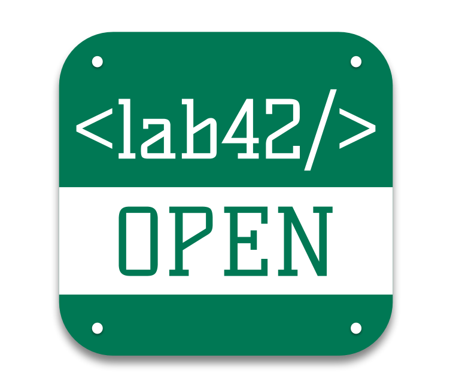

<div style="    margin-left: auto;     margin-right: auto;     display: block;     width: 50%; "><br>
    Gathering and mining public knowledge to open novel doors in molecular ecology, microbiology and biodiversity
    <br><br><br><br>
    <div style="    margin-left: auto;     margin-right: auto;     display: block;     width: 50%; ">
    <a href="https://github.com/lab42open-team" target="blank"></a>
    
    <a href="https://github.com/lab42open-team" target="blank"></a>
    &nbsp;&nbsp;
    <a href="https://twitter.com/prego_project/" target="blank"></a>
    &nbsp;&nbsp;
    <a href='mailto&#58;paf&#105;&#37;6Cis&#64;h%&#54;3m%7&#50;&#46;&#37;6&#55;r'>
    </a>
    </div>
</div>


<div style="    margin-left: auto;     margin-right: auto;     display: block;     width: 50%;
                margin-top: 7.5%;       font-size: smaller;">
    Member of IMBBC/HCMR's <a target="_blank" href="https://imbbc.hcmr.gr/research-directions/biodiversity-informatics-and-data-science/">Biodiversity Informatics and Data Science</a> research direction
    <br><br><br>
    <i>
      By the means of academic reporting, Google Analytics cookies are in use to collect web site traffic statistics.
      By using this site, you agree to its use of cookies.
    </i>
    <!--
    <br>
    <br>
    This in an informal team of IMBBC/HCMR. Opinions expressed in this website represent their authors and not IMBBC/HCMR.
    A formal descrption of IMBBC/HCMR's related Biodiversity Informatics and Data Science research direction is available
    <a href="https://imbbc.hcmr.gr/research-directions/biodiversity-informatics-and-data-science/">here</a>.
    -->
</div>


 

<!-- Αction Items 
## upon next web page update:
    next: add News section like in PREGO, or point to the PREGO News
-->
